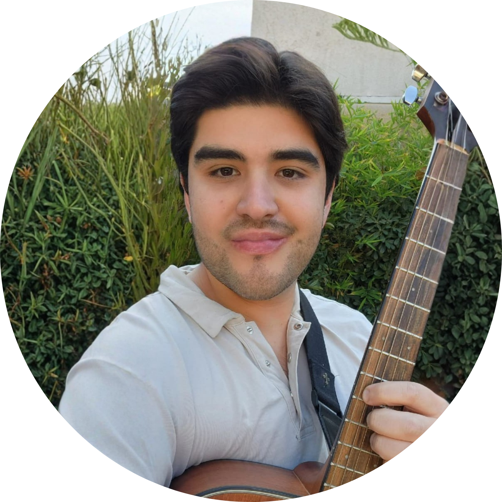

Guitarra y desarrollo psicológico para niños y jóvenes
Regulación emocional, concentración y autoestima, a través del estudio de un instrumento musical. Un programa de 16 semanas, presencial y personalizado.
El programa está pensado para niños y jóvenes de 8 a 18 años sin conocimiento musical previo o con nociones básicas. No se requiere ninguna condición particular. Puede ser especialmente valioso para quienes enfrentan desafíos como:
Dificultades para sostener la atención en tareas que requieren esfuerzo sostenido
Tendencia a frustrarse con facilidad ante los errores o los obstáculos
Dificultades en la interacción social o en la expresión emocional
Baja tolerancia a la demora de la recompensa o al esfuerzo sin resultado inmediato
Necesidad de un espacio propio de autoconocimiento y expresión
Escasa confianza en las propias capacidades o baja percepción de logro
El programa no trabaja desde diagnósticos ni etiquetas. Trabaja desde el caso concreto del niño, sus comportamientos específicos, su contexto y su potencial. Cada caso es único, y el método se adapta a esa unicidad.

Autor del programa
Empecé a estudiar guitarra clásica a los once años de edad. Aprendí algo de piano y saxofón, para terminar estudiando a fondo la batería de Jazz.
La música no fue para mí solo un hobby, fue el medio a través del cual aprendí a relacionarme con los demás, a gestionar mis emociones y a construir una identidad propia. De pequeño me costaba la vida social, no entendía los juegos ni intereses de los otros niños, y la música me abrió las posibilidades de empezar a conectar con los demás.
Fue esa experiencia la que me llevó a estudiar la psicología humana y crear un método que integre lo que más me ha servido: la precisión del trabajo conductual y el lenguaje transformador de la música.
Soy psicólogo clínico (Universidad de Zaragoza, España), con formación en gestión del talento (EADA Barcelona), innovación (PUC) y musicoterapia (ADIPA). Mi enfoque clínico se basa en la ciencia conductual contextual: un marco que parte del comportamiento observable, pero que reconoce el rol de las emociones, los valores y el contexto en el desarrollo humano.
Cada bloque trabaja simultáneamente el instrumento y un ámbito del desarrollo psicológico. Los logros son observables, concretos y los padres reciben feedback estructurado al término de cada sesión.
Exploración del sonido, discriminación auditiva y primeras conexiones gesto-instrumento. El niño aprende que hay formas de comunicarse más allá de las palabras.
Discriminación de estímulosPráctica estructurada, secuencias y repetición deliberada. El niño descubre que es capaz — se refuerzan el automonitoreo y el control inhibitorio.
Moldeamiento conductualDel "hacer" al "entender". Con el instrumento como base, se profundiza en teoría aplicada: ritmo, melodía, armonía. Se abre la puerta de la creatividad.
Marcos relacionalesEl niño elige cómo quiere sonar y qué quiere comunicar. Introspección, expresión emocional, identidad. El programa finaliza con una pequeña presentación.
Valores y acción comprometidaLos beneficios no dependen de que el niño se convierta en músico. Así como el deporte fortalece la mente independientemente de si alguien llegará a ser atleta, este programa genera habilidades que el niño llevará mucho más allá de las clases.
Mayor capacidad para manejar la frustración y el malestar ante la dificultad
Desarrollo de la atención en tareas que requieren esfuerzo prolongado
El dominio progresivo del instrumento construye la convicción de "soy capaz"
Un medio nuevo para comunicar emociones y conectar con los demás
Una rutina que se transfiere a otras áreas académicas y personales
El instrumento como herramienta de autoconocimiento y puente hacia los demás
Sesión única de 60 minutos con todo el material y feedback a los padres.
Incluye
El formato recomendado para aprovechar el programa en profundidad.
Todo lo anterior, más:
Para dimensionar la propuesta: este programa integra ambas dimensiones, la del estudio del instrumento y el acompañamiento psicológico, en una sola sesión, con un método diseñado para conseguir resultados de alto impacto en el largo plazo.